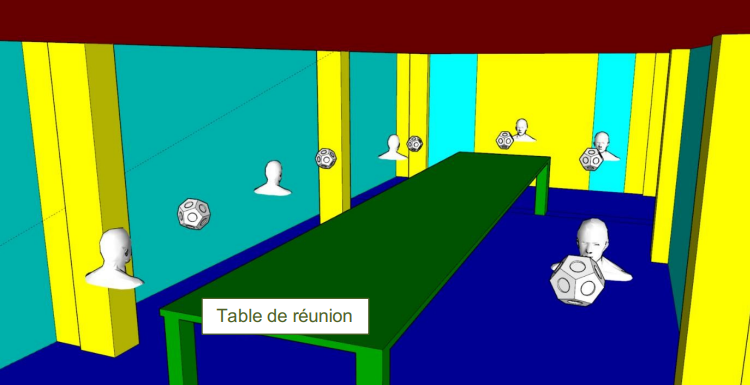
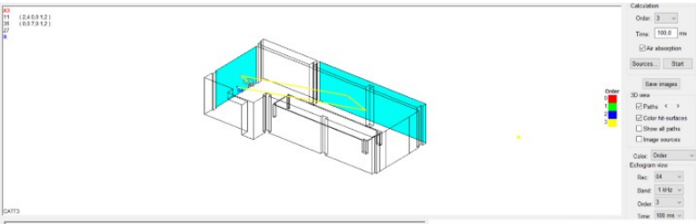
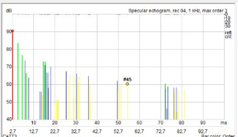
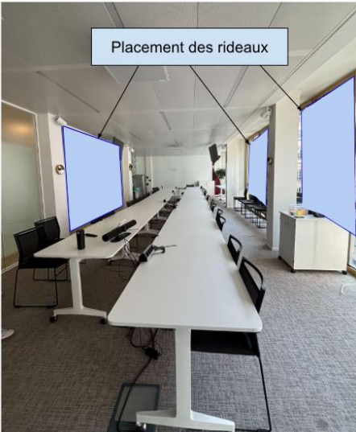

Malgré des temps de réverbération globalement conformes (TR ≤ 0,6 s), une salle de visioconférence présentait des difficultés d’intelligibilité. Mon travail a consisté à analyser ses caractéristiques acoustiques et à évaluer une solution corrective.

01 / SKETCHUP + CATT
Modèle acoustique 3D
Modélisation de la salle sous SketchUp, puis attribution des matériaux et de leurs propriétés acoustiques dans CATT-Acoustic.

02 / CATT-ACOUSTIC
Propagation sonore sous TUCT
La simulation TUCT permet d’observer les trajets de propagation et d’étudier les réflexions sur les surfaces vitrées.

03 / CATT-ACOUSTIC
Analyse des réflexions
L’échogramme met en évidence les réflexions sonores. Les simulations ont été comparées aux mesures de temps de réverbération pour ajuster le modèle.

04 / CATT-ACOUSTIC
Solution acoustique étudiée
Une solution par rideaux absorbants a été évaluée numériquement afin d’améliorer le confort acoustique, sans installation confirmée sur site.